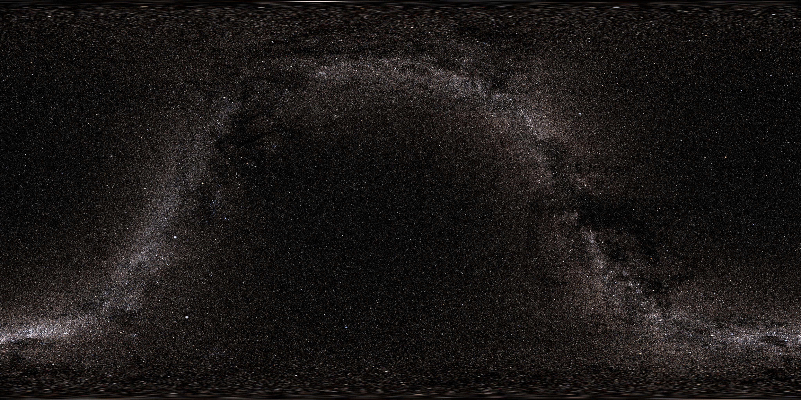

<!DOCTYPE html>
<meta charset="utf-8">
<title>Monolith</title>
<script src="https://aframe.io/releases/0.2.0/aframe.js"></script>
<a-scene>
  <a-assets>
    
  </a-assets>

  <a-box id="target" color="#444" width="4" height="10" depth="1" sound="src: zarathustra.mp3; autoplay: true;">
    <a-animation attribute="rotation" dur="27000" begin="57000" to="-60 0 -3"></a-animation>
  </a-box>


  <a-light type="spot" color="#888" position="50 0 0" look-at="a-box"></a-light>
  <a-light type="spot" color="#888" position="-50 0 0" look-at="a-box"></a-light>

  <a-sky src="#galaxy" rotation="0 -130 0"></a-sky>

  <a-camera position="10 5 20" look-at="#target">
    <a-animation attribute="position" fill="forwards" dur="97000" to="0 0 3"></a-animation>
  </a-camera>

</a-scene>
